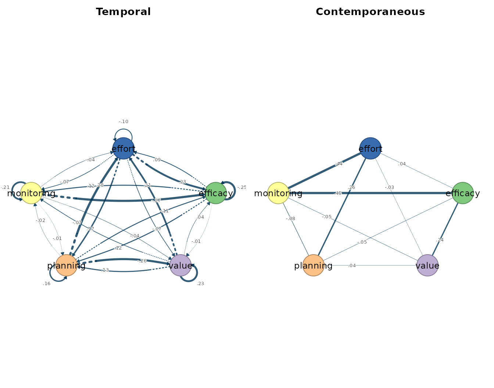
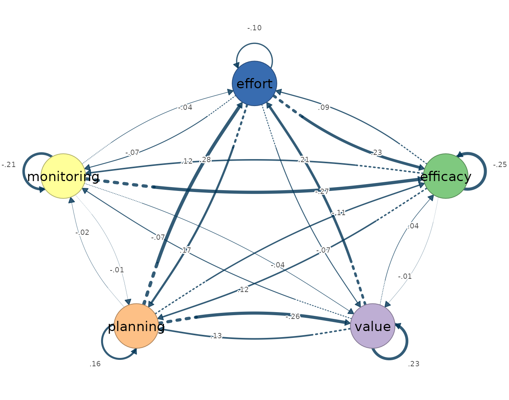
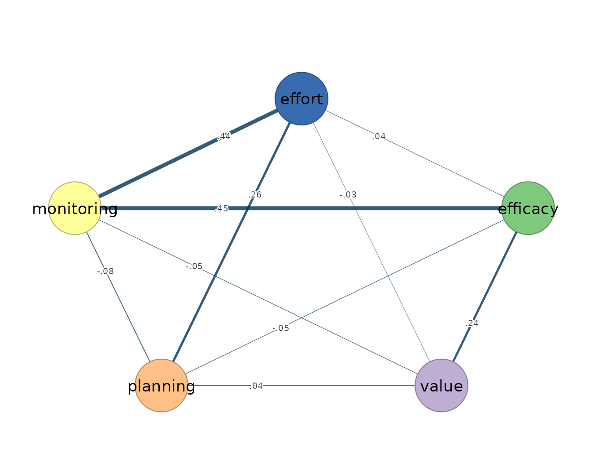

Rolling networks relax the one assumption every full-series model in this package shares: that a single within-person process holds across the whole observation window. A vector autoregression fitted to all of one person’s occasions returns one temporal and one contemporaneous network and asserts, through its weak-stationarity assumption, that the same dynamics generated the first week of the protocol and the last. Rolling estimation withdraws that assertion. It slides a window of fixed length along the ordered series of a single person and refits the estimator inside each window, so stationarity is required only locally, within a window, and the sequence of window fits describes how that person’s own dynamics change over the protocol.
The estimand is correspondingly local and within-person. A temporal
edge from -> to in a given window states that this
person’s deviation on from at occasion
predicts their deviation on to at occasion
,
for the occasions inside that window, holding the other lagged variables
constant. A contemporaneous edge is a window-local partial correlation
among the within-occasion innovations — the associations that lag-one
prediction inside the window does not account for (Bringmann et al.
2013; Epskamp et al.
2018). Nothing in either estimand refers to other people:
every window is estimated from one individual’s occasions, and
differences between windows are within-person change in dynamics, not
differences between persons.
Two rolling estimators are provided. fit_rolling_var()
refits the ordinary least-squares VAR in each window and is the
unregularized, time-varying baseline: every window returns a dense
temporal matrix and a dense contemporaneous matrix.
fit_rolling_graphical_var() refits the penalized penalized
two-step estimator in each window — lasso-penalized lagged regressions,
a graphical lasso on their residuals, the penalty selected per window by
the extended Bayesian information criterion — so each window carries its
own sparsity decision. Both are descriptive instruments: a sequence of
window fits shows that local dynamics differ, not why they differ.
Rolling estimation is also not a remedy for short series — each window
contains fewer observations than the full series, so the window size
sets a bias-variance tradeoff in which smaller windows track change more
finely but estimate every network from less data. Because adjacent
windows share most of their occasions, their estimates are strongly
dependent, and window-size sensitivity should be reported whenever
rolling networks are offered as evidence of changing dynamics.
Data and preprocessing
The rolling estimators expect the same long format as their
full-series counterparts: one row per person-occasion, an id column, and
numeric time-varying indicators ordered within person. The bundled
srl data hold self-regulated-learning indicators for 36
students measured over 156 occasions each; this vignette fits a single
student, Grace, on five indicators. Passing
subject = "Grace" selects her series inside the call, so
the full srl data remain intact. The stationarity screen
precedes the fit.
vars <- c("efficacy", "value", "planning", "monitoring", "effort")
preprocess(srl, vars = vars, id = "name", subject = "Grace")
#> Idiographic Preprocessing
#> Variables: 5 (efficacy, value, planning, monitoring, effort)
#> Ordered rows: 156
#> Retained pairs: 155
#> Trend flags: 0
#> High AR flags: 0
#> Drift flags: 0
#> Unit-root risk: 0
#> Zero variance: 0
#> Tables: x$pairs | x$counts | x$diagnosticsGrace’s 156 ordered occasions yield 155 complete current/lagged pairs, and no series trips a trend, high-autoregression, drift, unit-root, or zero-variance flag. A clean global screen does not settle the question rolling estimation asks: the whole-series diagnostics average over the protocol, and dynamics that shift midway can leave every global flag silent. The window fits below pose that local question directly.
Fitting the model
window_size sets the number of occasions in each local
fit, step sets how far the window advances, and
keep_fits = TRUE stores each fitted window model so that
matrices() and plot() can inspect a selected
window afterwards. With Grace’s 156 occasions, a 50-occasion window
advancing by 20 gives six windows, starting at occasions 1, 21, 41, 61,
81, and 101 and ending at occasion 150; each window’s networks are
estimated from the 49 lagged pairs its 50 occasions provide.
rolling_ols <- fit_rolling_var(
srl, vars = vars, id = "name", subject = "Grace",
window_size = 50, step = 20, scale = TRUE, keep_fits = TRUE
)
rolling_ols
#> Rolling VAR Result
#> Subjects: 1
#> Windows: 6
#> Variables: 5 (efficacy, value, planning, monitoring, effort)
#> Tables: x$estimates | x$windows | x$failures
#> Cograph: cograph::splot(x$fits[[1]])
#> Matrices: matrices(x$fits[[1]])The ordinary rolling fit returns six windows for Grace, each holding a dense least-squares temporal matrix and a dense contemporaneous matrix — the unregularized, time-varying baseline against which the sparse variant can be read.
The graphical variant repeats the penalized estimation in every
window. Sparse selection contributes sampling variability of its own —
the selected edge set can change from window to window even when the
underlying process does not — so a larger window of 70 occasions
advancing by 25 is used to partially offset it, and a coarse penalty
grid (n_lambda = 8) with gamma = 0, the
plain-BIC end of the criterion, keeps the per-window selection
inexpensive and less severe toward retained edges than the default
gamma = 0.5.
rolling_gvar <- fit_rolling_graphical_var(
srl, vars = vars, id = "name", subject = "Grace",
window_size = 70, step = 25, n_lambda = 8, gamma = 0,
keep_fits = TRUE
)
rolling_gvar
#> Rolling Graphical VAR Result
#> Subjects: 1
#> Windows: 4
#> Variables: 5 (efficacy, value, planning, monitoring, effort)
#> Tables: x$estimates | x$windows | x$failures
#> Cograph: cograph::splot(x$fits[[1]])
#> Matrices: matrices(x$fits[[1]])The graphical rolling fit returns four windows, starting at occasions 1, 26, 51, and 76, each estimated from the 69 lagged pairs its 70 occasions provide and each carrying its own EBIC-selected sparsity decision.
Reading the output
as.data.frame() flattens a rolling result to one row per
window and edge, with the window’s start and end rows carried alongside
each weight; the first twelve rows cover the temporal edges of Grace’s
first window.
head(as.data.frame(rolling_ols), 12)
#> subject window start_row end_row start_day end_day start_beep end_beep
#> 1 Grace 1 1 50 <NA> <NA> NA NA
#> 2 Grace 1 1 50 <NA> <NA> NA NA
#> 3 Grace 1 1 50 <NA> <NA> NA NA
#> 4 Grace 1 1 50 <NA> <NA> NA NA
#> 5 Grace 1 1 50 <NA> <NA> NA NA
#> 6 Grace 1 1 50 <NA> <NA> NA NA
#> 7 Grace 1 1 50 <NA> <NA> NA NA
#> 8 Grace 1 1 50 <NA> <NA> NA NA
#> 9 Grace 1 1 50 <NA> <NA> NA NA
#> 10 Grace 1 1 50 <NA> <NA> NA NA
#> 11 Grace 1 1 50 <NA> <NA> NA NA
#> 12 Grace 1 1 50 <NA> <NA> NA NA
#> network from to weight
#> 1 temporal efficacy efficacy -0.25429487
#> 2 temporal value efficacy 0.03646890
#> 3 temporal planning efficacy -0.10612404
#> 4 temporal monitoring efficacy -0.27165868
#> 5 temporal effort efficacy 0.22533350
#> 6 temporal efficacy value -0.01118590
#> 7 temporal value value 0.23299541
#> 8 temporal planning value -0.26487351
#> 9 temporal monitoring value -0.04032158
#> 10 temporal effort value -0.07058221
#> 11 temporal efficacy planning 0.11614890
#> 12 temporal value planning 0.13268956Within the first window, monitoring at occasion predicts lower efficacy at (-0.272), planning predicts lower value (-0.265), and planning predicts higher effort (0.277). These local coefficients exceed anything the full-series least-squares fit reports for the same student — its largest temporal coefficient is 0.160 in absolute value — which is the rolling tradeoff stated numerically: a 50-occasion window can express transient local dynamics that the full series averages away, and it estimates them with correspondingly more noise.
matrices(rolling_ols, fit = 1)
#>
#> $beta
#> (Intercept) efficacy value planning monitoring effort
#> efficacy -0.003 -0.254 0.036 -0.106 -0.272 0.225
#> value 0.030 -0.011 0.233 -0.265 -0.040 -0.071
#> planning -0.020 0.116 0.133 0.159 -0.014 0.168
#> monitoring 0.005 0.123 -0.067 -0.024 -0.212 -0.074
#> effort 0.023 0.086 0.206 0.277 -0.036 -0.101
#>
#> $temporal
#> efficacy value planning monitoring effort
#> efficacy -0.254 0.036 -0.106 -0.272 0.225
#> value -0.011 0.233 -0.265 -0.040 -0.071
#> planning 0.116 0.133 0.159 -0.014 0.168
#> monitoring 0.123 -0.067 -0.024 -0.212 -0.074
#> effort 0.086 0.206 0.277 -0.036 -0.101
#>
#> $residual_cov
#> efficacy value planning monitoring effort
#> efficacy 0.847 0.206 -0.015 0.469 0.243
#> value 0.206 0.858 0.020 0.061 0.021
#> planning -0.015 0.020 0.899 0.019 0.209
#> monitoring 0.469 0.061 0.019 0.964 0.461
#> effort 0.243 0.021 0.209 0.461 0.867
#>
#> $kappa
#> efficacy value planning monitoring effort
#> efficacy 1.724 -0.358 0.072 -0.781 -0.076
#> value -0.358 1.246 -0.045 0.077 0.040
#> planning 0.072 -0.045 1.199 0.122 -0.373
#> monitoring -0.781 0.077 0.122 1.771 -0.755
#> effort -0.076 0.040 -0.373 -0.755 1.666
#>
#> $PCC
#> efficacy value planning monitoring effort
#> efficacy 0.000 0.245 -0.050 0.447 0.045
#> value 0.245 0.000 0.037 -0.052 -0.028
#> planning -0.050 0.037 0.000 -0.084 0.264
#> monitoring 0.447 -0.052 -0.084 0.000 0.440
#> effort 0.045 -0.028 0.264 0.440 0.000
#>
#> $PDC
#> efficacy value planning monitoring effort
#> efficacy -0.206 -0.009 0.093 0.095 0.070
#> value 0.035 0.220 0.124 -0.061 0.194
#> planning -0.105 -0.253 0.151 -0.022 0.263
#> monitoring -0.217 -0.033 -0.011 -0.160 -0.029
#> effort 0.186 -0.059 0.136 -0.058 -0.084matrices() with fit = 1 returns the first
window’s coefficient matrices: the lag-one temporal matrix, the residual
covariance and precision of the innovations, and the partial
correlations derived from them. The window-one contemporaneous layer is
dominated by efficacy–monitoring (0.447) and monitoring–effort (0.440),
close to Grace’s full-series contemporaneous pattern: in this series the
within-occasion structure is more stable than the temporal
coefficients.
head(as.data.frame(rolling_gvar), 12)
#> subject window start_row end_row start_day end_day start_beep end_beep
#> 1 Grace 1 1 70 <NA> <NA> NA NA
#> 2 Grace 1 1 70 <NA> <NA> NA NA
#> 3 Grace 1 1 70 <NA> <NA> NA NA
#> 4 Grace 1 1 70 <NA> <NA> NA NA
#> 5 Grace 1 1 70 <NA> <NA> NA NA
#> 6 Grace 1 1 70 <NA> <NA> NA NA
#> 7 Grace 1 1 70 <NA> <NA> NA NA
#> 8 Grace 1 1 70 <NA> <NA> NA NA
#> 9 Grace 1 1 70 <NA> <NA> NA NA
#> 10 Grace 1 1 70 <NA> <NA> NA NA
#> 11 Grace 1 1 70 <NA> <NA> NA NA
#> 12 Grace 1 1 70 <NA> <NA> NA NA
#> network from to weight
#> 1 temporal efficacy efficacy 0
#> 2 temporal value efficacy 0
#> 3 temporal planning efficacy 0
#> 4 temporal monitoring efficacy 0
#> 5 temporal effort efficacy 0
#> 6 temporal efficacy value 0
#> 7 temporal value value 0
#> 8 temporal planning value 0
#> 9 temporal monitoring value 0
#> 10 temporal effort value 0
#> 11 temporal efficacy planning 0
#> 12 temporal value planning 0
matrices(rolling_gvar, fit = 1)
#>
#> $beta
#> (Intercept) efficacy value planning monitoring effort
#> efficacy -0.004 0 0 0 0 0
#> value 0.016 0 0 0 0 0
#> planning -0.011 0 0 0 0 0
#> monitoring 0.001 0 0 0 0 0
#> effort 0.019 0 0 0 0 0
#>
#> $temporal
#> efficacy value planning monitoring effort
#> efficacy 0 0 0 0 0
#> value 0 0 0 0 0
#> planning 0 0 0 0 0
#> monitoring 0 0 0 0 0
#> effort 0 0 0 0 0
#>
#> $kappa
#> efficacy value planning monitoring effort
#> efficacy 1.071 0.000 0.000 -0.274 0.000
#> value 0.000 1.018 0.000 0.000 0.000
#> planning 0.000 0.000 1.014 0.000 -0.076
#> monitoring -0.274 0.000 0.000 1.151 -0.299
#> effort 0.000 0.000 -0.076 -0.299 1.115
#>
#> $PCC
#> efficacy value planning monitoring effort
#> efficacy 0.000 0 0.000 0.247 0.000
#> value 0.000 0 0.000 0.000 0.000
#> planning 0.000 0 0.000 0.000 0.071
#> monitoring 0.247 0 0.000 0.000 0.264
#> effort 0.000 0 0.071 0.264 0.000
#>
#> $PDC
#> efficacy value planning monitoring effort
#> efficacy 0 0 0 0 0
#> value 0 0 0 0 0
#> planning 0 0 0 0 0
#> monitoring 0 0 0 0 0
#> effort 0 0 0 0 0The first sparse window retains no temporal edges, matching the full-series graphical fit for the same student. Its contemporaneous layer keeps efficacy–monitoring (0.247), monitoring–effort (0.264), and a small planning–effort edge (0.071) — the same three within-occasion partial correlations the full-series graphical fit selects, here at window-local magnitudes.
Visualizing the network
Plotting a rolling fit with fit = 1 draws the selected
window’s temporal and contemporaneous panels side by side, with edge
width scaled to absolute weight and colour encoding sign.
plot(rolling_ols, fit = 1)
The first-window OLS plot is dense, as every unregularized window is: each of the 25 possible temporal arrows and 10 possible contemporaneous edges carries some estimate, and the eye is drawn by width rather than by presence.
plot(rolling_ols, fit = 1, layer = "temporal")
The temporal panel isolates the local lag-one structure — the monitoring-to-efficacy and planning-to-effort effects read from the table above.
plot(rolling_ols, fit = 1, layer = "contemporaneous")
The contemporaneous panel carries the efficacy–monitoring–effort core that also anchors Grace’s full-series fits.
plot(rolling_gvar, fit = 1, layer = "contemporaneous")
The sparse window keeps the same core and sets the remaining
within-occasion associations to exact zeros. Redrawing this panel for
each of the four windows, by varying fit, is the graphical
form of the question rolling estimation answers: whether this person’s
local structure holds steady or moves over the protocol.